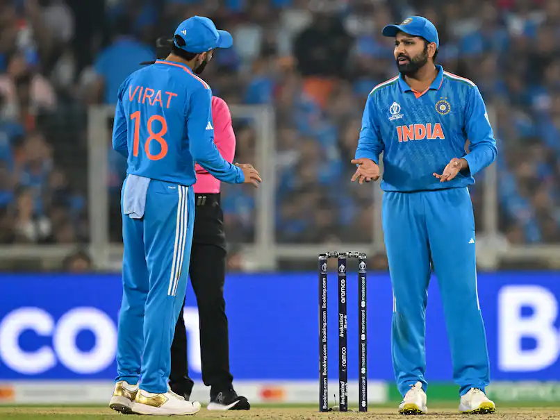

November 21, 2023
ExplainSpeaking: Did India lose the World Cup because of the law of averages?
As the Indian cricket team’s unprecedented dominant run came to a tame end on Sunday evening, many commentators — followers and detractors alike — blamed the result on the “law of averages”. In fact, as India approached the last few matches in the league stage, many had claimed that it may be a good thing if India lost a match at that stage instead of entering the knock-outs (which involved just two matches — the semi-final and the final) undefeated.
OpinionUpdated: November 22, 2023 10:38 am IST. I may or may not have unleashed the drunk sailor in me on Sunday. I'm not proud of it but blame it on my accident of birth. I'm an Indian and I cannot keep calm. Especially when there is a cricket match on. World Cup (men's) finals at that. Let me admit, I may be the problem. And everyone like me is part of the problem India seems to be grappling with for decades, or even centuries.